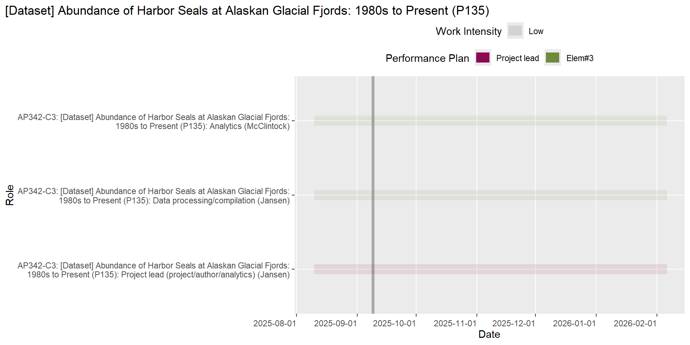
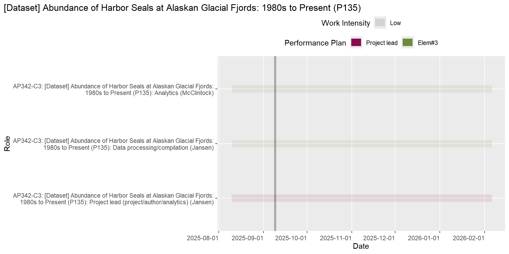

PEP Scheduling Report
This report was generated on 2024-10-03.
Introduction
The information in this report represents the outstanding and upcoming work for PEP staff over the next 180 days. The intent of this information is to help support cross-project planning and communication.
Roles Missing Info
The following table lists the the number of roles for each staff that are missing required information in the DB.
Click to Expand
| Staff | # Missing Info |
|---|---|
| Boveng | 25 |
| Brady | 11 |
| Cameron | 10 |
| Christman | 9 |
| Conn | 13 |
| Dahle | 12 |
| Jansen | 23 |
| Koslovsky | 25 |
| Lindsay | 2 |
| London | 28 |
| McClintock | 18 |
| Moreland | 17 |
| Richmond | 23 |
| VerHoef | 10 |
| Walcott | 14 |
| Ziel | 29 |
Work Due Soon
The following table lists the roles that are expected to end within the next 10 days in the DB.
| Project | Role | Staff | Planned End Date |
|---|---|---|---|
| AP342-C1: 2024 Aerial Survey Counts - Glacial (P157) | Data management (including GIS) (R756) | Koslovsky | 2024-10-11 |
Overdue Work
The following table lists the roles that are overdue in the DB.
Hooray!! No overdue work!
Potential Bottlenecks
The following figures display the number of roles by work intensity by staff for this week, in the next 30 days and in the next 90 days.


Planned Work by PEP Staff
Today’s date is shown as a grey vertical line on the figure. Roles that are missing “work intensity” appear on the y-axis of each chart, but the start/end dates are not visible.


Planned Work by Project
Today’s date is shown as a grey vertical line on the figure. Roles that are missing “work intensity” appear on the y-axis of each chart, but the start/end dates are not visible.
Click to Expand
Harbor seals (AP342)
Aerial surveys of harbor seals in Alaska (C1)


Harbor seal reporting (C17)

Other (AP999)
Program data management (C15)


Working group memberships (C28)
 

Toolbox (AP354)
Integrating diverse data sources (C12)


UAS body condition (AP356)
Phase III: UAS field tests, analysis and reporting (C14)

Manuscripts
The following tables list the actions associated with each planned manuscript.
Click to Expand
Bearded seal “at sea” distributions (P37)
| Role | Staff | Planned End Date | Status |
|---|---|---|---|
| Analytics lead (A232) | Conn | 2025-01-01 | In progress |
| Lead author (A351) | Conn | 2025-01-01 | In progress |
| Project lead (A634) | Conn | 2025-01-01 | In progress |
Reports
The following tables list the actions associated with each planned report.
Click to Expand
NA
| Role | Staff | Planned End Date | Status |
|---|
| Role | Staff | Planned End Date | Status |
|---|
Performance Plan Elements (FY25)
The following tables list the roles for all PEP staff by performance plan element.
Click to Expand
Project Lead
AP342-C1: Harbor seals - Aerial surveys of harbor seals in Alaska
2020-2021 Aerial Survey Counts - Glacial
Element 3
AP342-C1: Harbor seals - Aerial surveys of harbor seals in Alaska
2020-2021 Aerial Survey Counts - Glacial
- R285: Data processing/compilation - Counting + post-counting work
Element 1
AP999-C15: Other - Program data management
PEP Data Days FY25
- R744: Science team/committee
Element 3
AP342-C1: Harbor seals - Aerial surveys of harbor seals in Alaska
2020-2021 Aerial Survey Counts - Glacial
- R753: Data processing/compilation - Counting COCOA imagery
Project Lead
AP354-C12: Toolbox - Integrating diverse data sources
[Manuscript] Bearded seal “at sea” distributions
Element 4
AP354-C12: Toolbox - Integrating diverse data sources
[Manuscript] Bearded seal “at sea” distributions
R232: Analytics lead - still waiting on updated acoustic data from Catherine
R351: Lead author
Project Lead
AP342-C17: Harbor seals - Harbor seal reporting
AK Harbor Seals Interactive Application
AP354-C12: Toolbox - Integrating diverse data sources
Data portal development for “at sea” distributions
AP999-C15: Other - Program data management
PEP Dashboard management
PEP Data Days FY25
PEP data/DB management
Element 1
AP999-C28: Other - Working group memberships
AFSC TIDE
- R749: NOAA/AFSC working group member
NOAA F-SAT/I
- R751: NOAA/AFSC working group member - 2-year rotation in role
Element 3
AP342-C1: Harbor seals - Aerial surveys of harbor seals in Alaska
2020-2021 Aerial Survey Counts - Glacial
R341: Data management (including GIS)
R755: Development (DB, software, code, etc.) - Final QA/QC work for COCOA sites
2024 Aerial Survey Counts - Glacial
R756: Data management (including GIS) - Data import for 2024 data
R757: Data processing/compilation - Data QA/QC and support after counting is completed
AP356-C14: UAS body condition - Phase III: UAS field tests, analysis and reporting
Collect imagery of free-ranging seals at the marginal ice zone of the Bering Sea
- R314: Data management (including GIS)
Element 1
AP999-C15: Other - Program data management
PEP Data Days FY25
- R745: Science team/committee
Element 1
AP999-C15: Other - Program data management
PEP Data Days FY25
- R746: Science team/committee
Element 1
AP999-C15: Other - Program data management
PEP Data Days FY25
- R747: Science team/committee
Element 3
AP342-C1: Harbor seals - Aerial surveys of harbor seals in Alaska
2020-2021 Aerial Survey Counts - Glacial
- R754: Data processing/compilation - Counting COCOA imagery
Element 1
AP999-C15: Other - Program data management
PEP Data Days FY25
- R748: Science team/committee